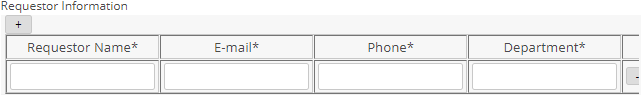
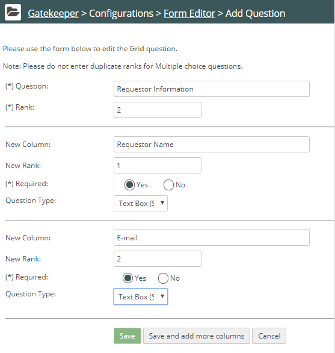

You can present questions to requestors in a grid, or table format, using the Grid question type. When the request form displays, requestors can click a + button to duplicate the row of questions.
Duplicating rows is useful when the requestor may be requesting a product for multiple locations. Rather than submitting a separate request for the same product for each location, the table allows them to submit different answers in each row of the table.
Example of Grid question:

To create a Grid Question:
In a request form, click Add Question and for the question type select Grid. Click Submit.
The Form Editor displays the Grid options.
In the New Column field, enter the text you want to appear as the column header.
You can more columns if needed by clicking Save and add more columns.
Choose a Question Type. If you choose Multiple Choice, the Form Editor displays answer fields to enter the options displayed to the requestor.

Displaying Pre-filled Answers in the Request Form
You can configure the form to display pre-filled answers in the request form. For example, multiple choice answers can have the answers already checked. If data is pre-filled, requestors cannot change the answers.
To specify pre-fill answers:
First, create and save the field. Then select the question on the form to edit it.
The Pre Fill Data button now appears on the form editing page.
Select Pre fill Data.
A form is presented in which you can choose the value to use to pre-fill the form.